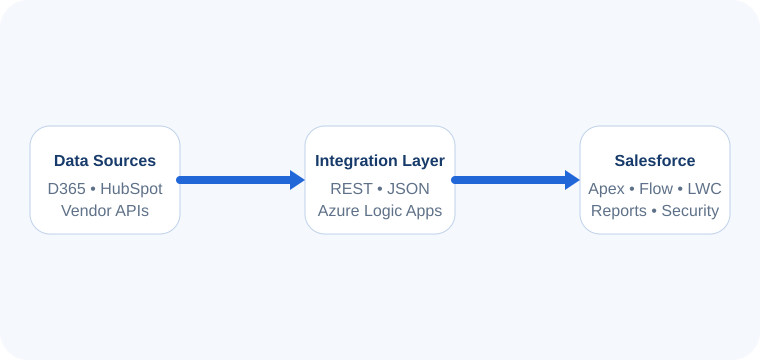

Platform engineering
I build with Apex, Lightning Web Components, Aura, Visualforce, SOQL/SOSL, triggers, asynchronous processing, and solid test coverage — then stay close to production issues until the root cause is clear.
I am a Senior Salesforce Developer and application systems analyst with 9+ years building and supporting secure CRM automation, Apex services, Lightning experiences, integrations, quoting workflows, release governance, and business-critical production operations.
The through-line across my career: understand the current system, make the business rule explicit, then ship automation and integrations that operations can support.
I build with Apex, Lightning Web Components, Aura, Visualforce, SOQL/SOSL, triggers, asynchronous processing, and solid test coverage — then stay close to production issues until the root cause is clear.
Flow, approvals, data quality, permissions, and human-review paths matter as much as code. I design CRM workflows so teams can trust what the platform does next.
Sales Cloud, Service Cloud, quoting, REST integrations, UAT, Gearset, Git, change control, and cross-functional release validation are part of how I ship — not afterthoughts.
A quick view of the breadth behind the project stories and experience narratives.
My strongest contribution to Salesforce AI-oriented work is the foundation behind trustworthy AI: clean CRM data, secure access, reliable automation, explainable business rules, API connectivity, monitored operations, and controlled releases.

See how I work across roles, dive into solution stories, review technical depth, or get in touch.